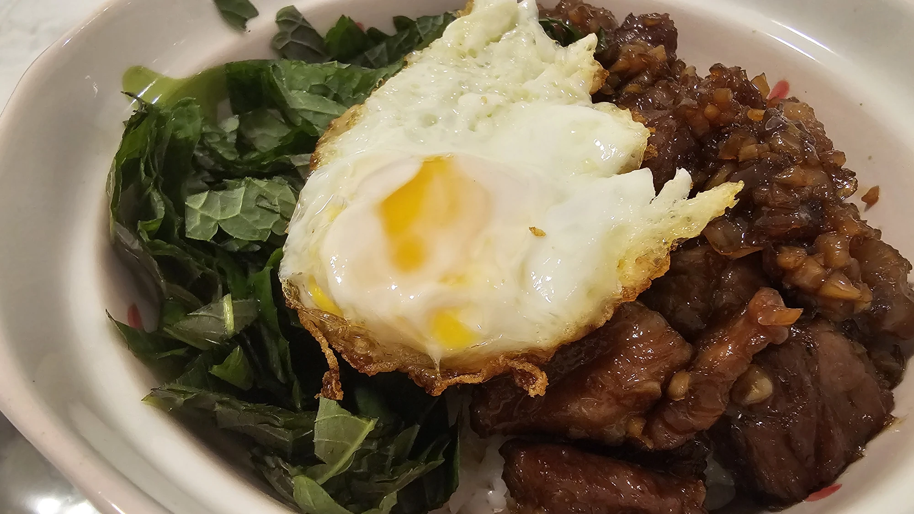

// Recipe · Main · Rice bowl · 돼지갈비 덮밥
Pork Galbi
Rice Bowl

Soy-garlic glazed pork over rice, with fresh perilla leaves and a fried egg on top.
Ingredients
- Pork ribs (galbi) or pork collar
- ½ onion
- 1 spoon minced garlic
- 3 spoons soy sauce
- 2 spoons mirin (Korean matsul)*
- Oligosaccharide syrup*
- Black pepper
- 3 spoons water
- Sesame oil
- Perilla leaves
- Egg
- Cooked rice
Steps
- Chop the onion and garlic into small pieces and add them to a frying pan.
- Blot the blood off the meat with a paper towel, score it with a knife, and add it to the pan.
- Add 3 spoons soy sauce, 1.5 spoons oligosaccharide syrup, 2 spoons mirin, a little pepper, and 1 spoon minced garlic.
- Massage the meat with your hands so it’s coated in the sauce, then add 3 spoons of water.
- Cook the meat over medium heat and cut it into pieces with scissors. Once the fat renders and the sauce has reduced, drizzle a round of sesame oil and add as much syrup as you like.
- Top the rice with the meat, perilla leaves, and a fried egg. For the perilla leaves: fold them and cut with scissors.
*Substitutions
- No mirin? Use dry white wine with a little sugar, to taste.
- No oligosaccharide syrup? Use sugar or another syrup. Oligo syrup is milder, so start with less and adjust.